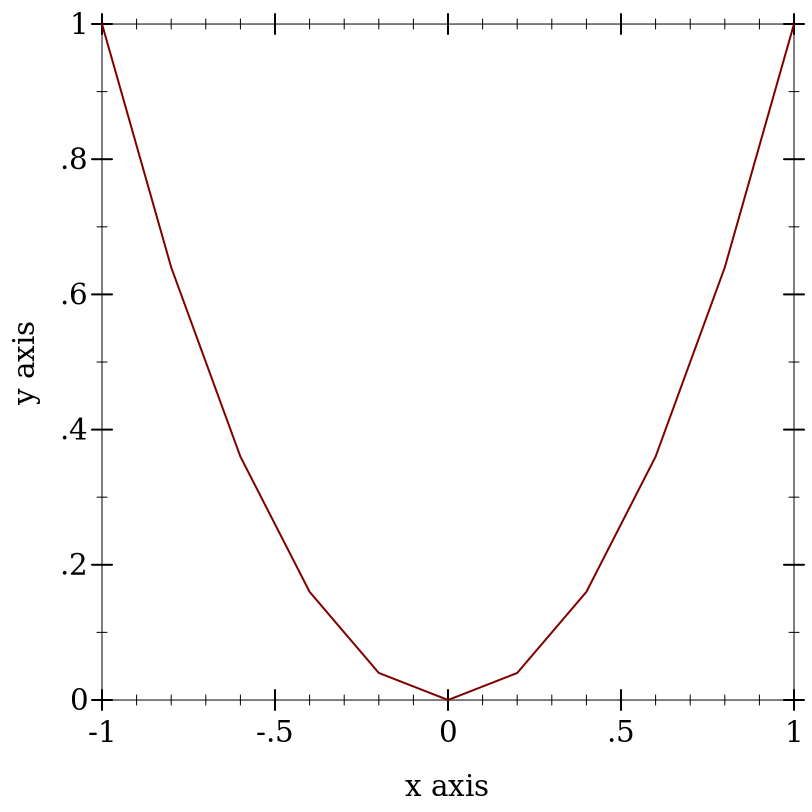
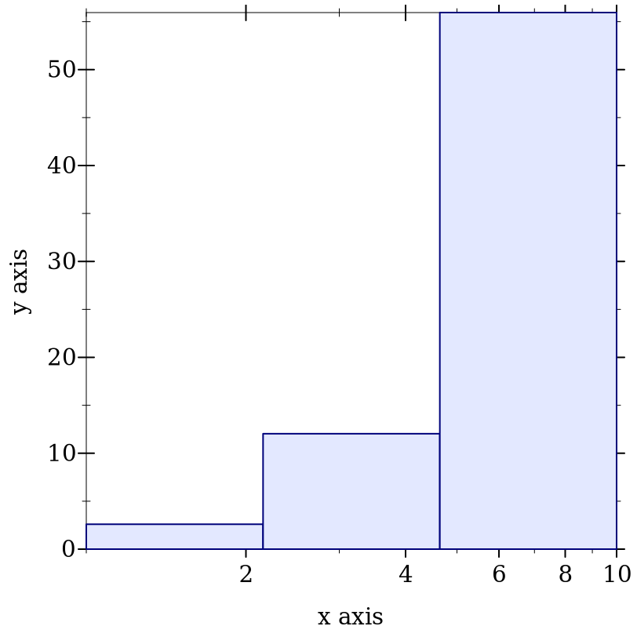
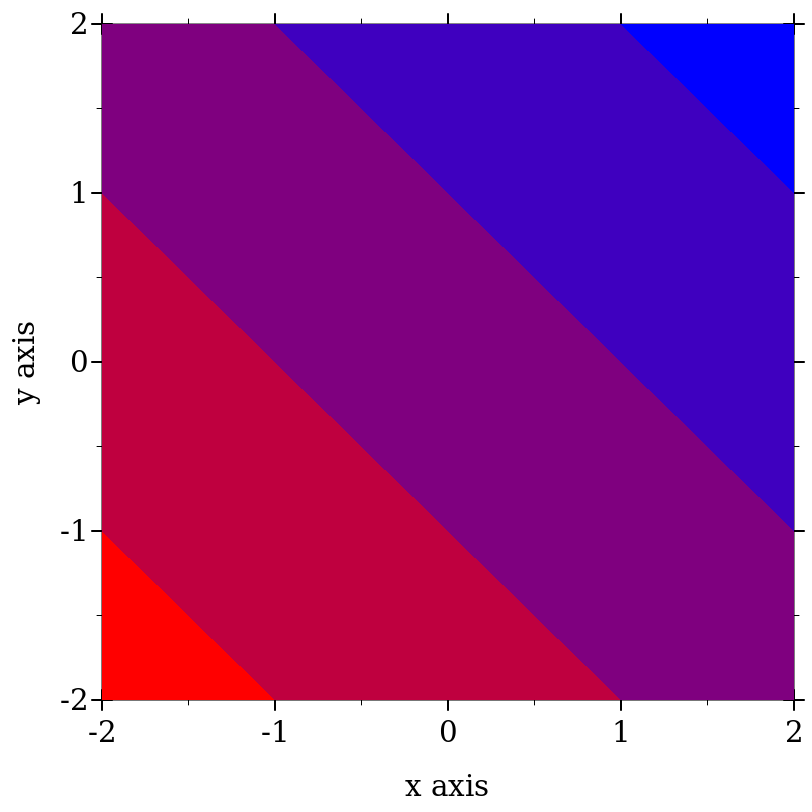
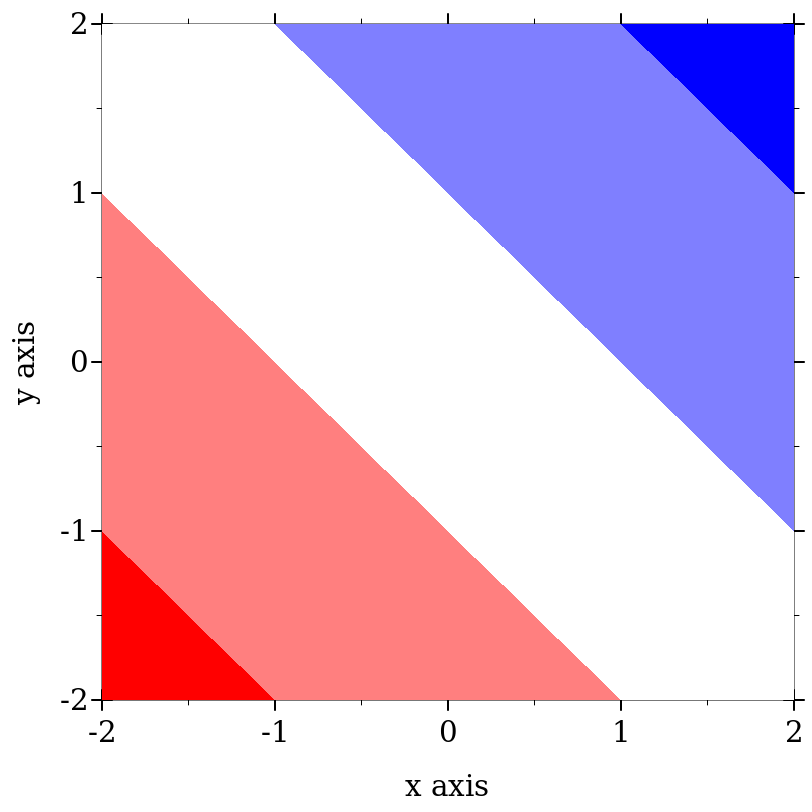
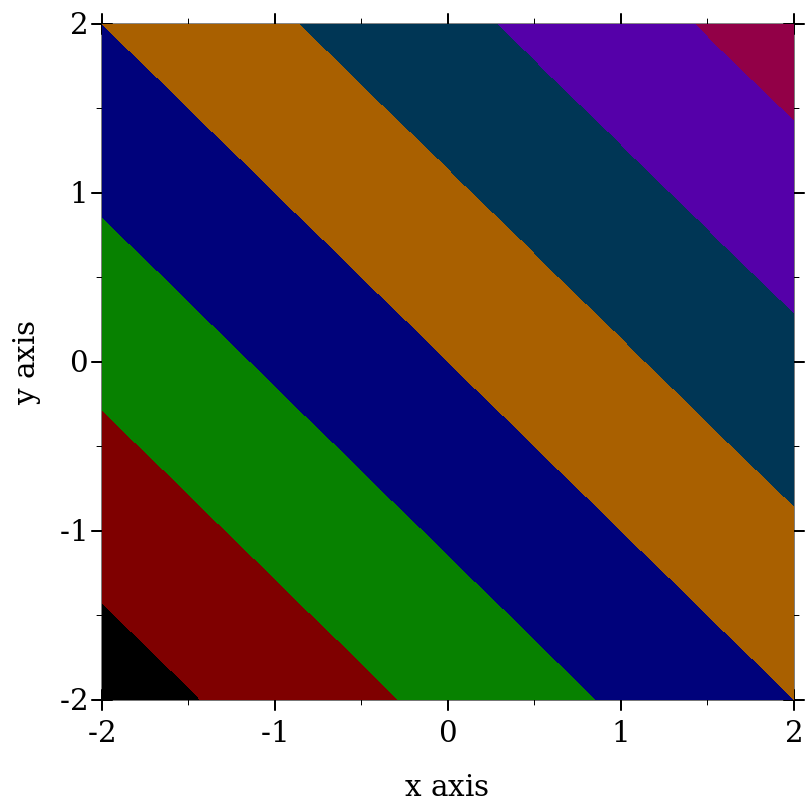
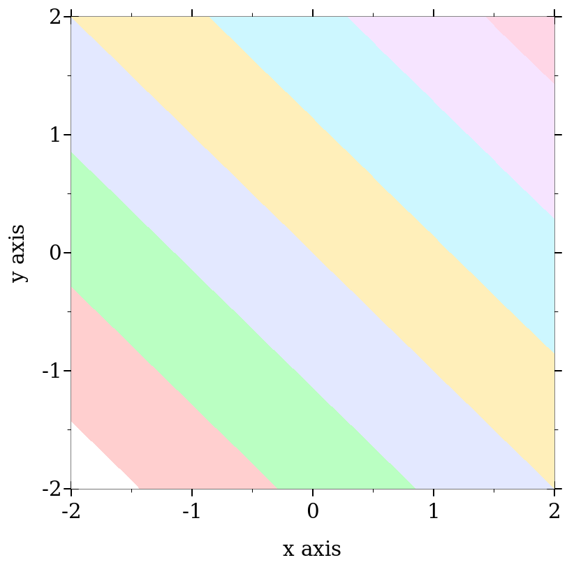
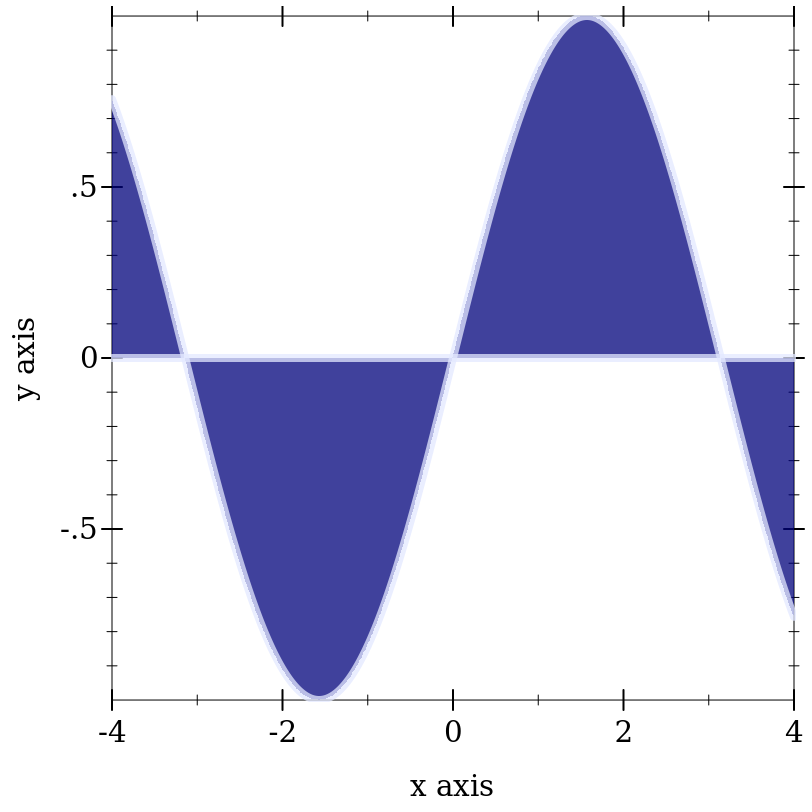

7 绘图实用程序
| (require plot/utils) | package: plot-lib |
7.1 格式化
procedure
(digits-for-range x-min x-max [ base extra-digits]) → exact-integer? x-min : real? x-max : real? base : (and/c exact-integer? (>=/c 2)) = 10 extra-digits : exact-integer? = 3
> (digits-for-range 0.01 0.02) 5
> (digits-for-range 0 100000) -2
procedure
(real->plot-label x digits [scientific?]) → string?
x : real? digits : exact-integer? scientific? : boolean? = #t
> (let ([d (digits-for-range 0.01 0.03)]) (real->plot-label 0.02555555 d)) ".02556"
> (real->plot-label 2352343 -2) "2352300"
> (real->plot-label 1000000000.0 4) "1×10⁹"
> (real->plot-label 1000000000.1234 4) "(1×10⁹)+.1234"
procedure
(ivl->plot-label i [extra-digits]) → string?
i : ivl? extra-digits : exact-integer? = 3
> (ivl->plot-label (ivl -10.52312 10.99232)) "[-10.52,10.99]"
> (ivl->plot-label (ivl -inf.0 pi)) "[-inf.0,3.141592653589793]"
procedure
(->plot-label a [digits]) → string?
a : any/c digits : exact-integer? = 7
procedure
(real->string/trunc x e) → string?
x : real? e : exact-integer?
procedure
(real->decimal-string* x min-digits [ max-digits]) → string? x : real? min-digits : exact-nonnegative-integer? max-digits : exact-nonnegative-integer? = min-digits
> (real->decimal-string* 1 5 10) "1.00000"
> (real->decimal-string* 1.123456 5 10) "1.123456"
> (real->decimal-string* 1.123456789123456 5 10) "1.1234567891"
procedure
(integer->superscript x) → string?
x : exact-integer?
> (integer->superscript -1234567890) "⁻¹²³⁴⁵⁶⁷⁸⁹⁰"
7.2 取样
procedure
(linear-seq start end num [ #:start? start? #:end? end?]) → (listof real?) start : real? end : real? num : exact-nonnegative-integer? start? : boolean? = #t end? : boolean? = #t
这个函数在内部用于生成样本点。
> (linear-seq 0 1 5) '(0 1/4 1/2 3/4 1)
> (linear-seq 0 1 5 #:start? #f) '(1/9 1/3 5/9 7/9 1)
> (linear-seq 0 1 5 #:end? #f) '(0 2/9 4/9 2/3 8/9)
> (linear-seq 0 1 5 #:start? #f #:end? #f) '(1/10 3/10 1/2 7/10 9/10)
> (define xs (linear-seq -1 1 11)) > (plot (lines (map vector xs (map sqr xs)))) 
procedure
(linear-seq* points num [ #:start? start? #:end? end?]) → (listof real?) points : (listof real?) num : exact-nonnegative-integer? start? : boolean? = #t end? : boolean? = #t
> (linear-seq* '(0 1 2) 5) '(0 1/2 1 3/2 2)
> (linear-seq* '(0 1 2) 6) '(0 2/5 4/5 6/5 8/5 2)
> (linear-seq* '(0 1 0) 5) '(0 1/2 1 1/2 0)
procedure
(nonlinear-seq start end num transform [ #:start? start? #:end? end?]) → (listof real?) start : real? end : real? num : exact-nonnegative-integer? transform : axis-transform/c start? : boolean? = #t end? : boolean? = #t
> (linear-seq 1 10 4) '(1 4 7 10)
> (nonlinear-seq 1 10 4 log-transform) '(1.0 2.154434690031884 4.641588833612779 10.000000000000002)
> (parameterize ([plot-x-transform log-transform]) (plot (area-histogram sqr (nonlinear-seq 1 10 4 log-transform)))) 
procedure
(kde xs h [ws]) →
(-> real? real?) (or/c rational? #f) (or/c rational? #f) xs : (listof real?) h : (>/c 0) ws : (or/c (listof (>=/c 0)) #f) = #f
procedure
(silverman-bandwidth xs) → real?
xs : (listof real?)
Added in version 8.5 of package plot-lib.
7.3 图形颜色和样式
procedure
(color-seq c1 c2 num [ #:start? start? #:end? end?]) → (listof (list/c real? real? real?)) c1 : color/c c2 : color/c num : exact-nonnegative-integer? start? : boolean? = #t end? : boolean? = #t
> (plot (contour-intervals (λ (x y) (+ x y)) -2 2 -2 2 #:levels 4 #:contour-styles '(transparent) #:colors (color-seq "red" "blue" 5))) 
procedure
(color-seq* colors num [ #:start? start? #:end? end?]) → (listof (list/c real? real? real?)) colors : (listof color/c) num : exact-nonnegative-integer? start? : boolean? = #t end? : boolean? = #t
> (plot (contour-intervals (λ (x y) (+ x y)) -2 2 -2 2 #:levels 4 #:contour-styles '(transparent) #:colors (color-seq* '(red white blue) 5))) 
符号被转换为字符串,字符串在 color-database<%> 中被查找。 列表是不变的, color% 对象直接转换。
> (->color 'navy) '(36 36 140)
> (->color "navy") '(36 36 140)
> (->color '(36 36 140)) '(36 36 140)
> (->color (make-object color% 36 36 140)) '(36 36 140)
这个函数不把整数转换为 RGB 三联体,因为它没有办法知道这个颜色是用于笔还是用于刷。 使用 ->pen-color 和 ->brush-color 来转换整数。
procedure
(->pen-color c) → (list/c real? real? real?)
c : plot-color/c
> (equal? (->pen-color 0) (->pen-color 8)) #f
> (plot (contour-intervals (λ (x y) (+ x y)) -2 2 -2 2 #:levels 7 #:contour-styles '(transparent) #:colors (map ->pen-color (build-list 8 values)))) 
上面的例子是使用内部颜色地图, plot-pen-color-map 设置为 #f 。
procedure
(->brush-color c) → (list/c real? real? real?)
c : plot-color/c
> (equal? (->brush-color 0) (->brush-color 8)) #f
> (plot (contour-intervals (λ (x y) (+ x y)) -2 2 -2 2 #:levels 7 #:contour-styles '(transparent) #:colors (map ->brush-color (build-list 8 values)))) 
上面的例子是使用内部颜色地图,plot-brush-color-map 被设置为 #f 。 在这个例子中,在列表上 map ->brush-color 实际上是不必要的, 因为 contour-intervals 使用 ->brush-color 来转换填充颜色。
> (plot (function-interval sin (λ (x) 0) -4 4 #:color (->pen-color 3) #:line1-color (->brush-color 3) #:line2-color (->brush-color 3) #:line1-width 4 #:line2-width 4)) 
procedure
(->pen-style s) → symbol?
s : plot-pen-style/c
> (eq? (->pen-style 0) (->pen-style 5)) #t
> (map ->pen-style '(0 1 2 3 4)) '(solid dot long-dash short-dash dot-dash)
procedure
(->brush-style s) → symbol?
s : plot-brush-style/c
> (eq? (->brush-style 0) (->brush-style 7)) #t
> (map ->brush-style '(0 1 2 3)) '(solid bdiagonal-hatch fdiagonal-hatch crossdiag-hatch)
> (map ->brush-style '(4 5 6)) '(horizontal-hatch vertical-hatch cross-hatch)
procedure
(color-map-names) → (listof symbol?)
Added in version 7.3 of package plot-lib.
procedure
(color-map-size name) → integer?
name : symbol?
Added in version 7.3 of package plot-lib.
procedure
(register-color-map name color-map) → void
name : symbol? color-map : (vectorof (list byte? byte? byte?))
Added in version 7.3 of package plot-lib.
7.4 图形的特定数学
7.4.1 实数函数
procedure
(3d-polar->3d-cartesian θ ρ r) → (vector/c real? real? real?)
θ : real? ρ : real? r : real?
procedure
(ceiling-log/base b x) → exact-integer?
b : (and/c exact-integer? (>=/c 2)) x : (>/c 0)
> (ceiling (/ (log 100) (log 10))) 2.0
> (ceiling-log/base 10 100) 2
> (ceiling (/ (log 1/1000) (log 10))) -2.0
> (ceiling-log/base 10 1/1000) -3
procedure
(floor-log/base b x) → exact-integer?
b : (and/c exact-integer? (>=/c 2)) x : (>/c 0)
> (floor (/ (log 100) (log 10))) 2.0
> (floor-log/base 10 100) 2
> (floor (/ (log 1000) (log 10))) 2.0
> (floor-log/base 10 1000) 3
procedure
(maybe-inexact->exact x) → (or/c rational? #f)
x : (or/c rational? #f)
7.4.2 矢量函数
procedure
v1 : (vectorof real?) v2 : (vectorof real?)
procedure
v1 : (vectorof real?) v2 : (vectorof real?)
procedure
v : (vectorof real?)
procedure
v : (vectorof real?) c : real?
procedure
v : (vectorof real?) c : real?
procedure
(vnormalize v) → (vectorof real?)
v : (vectorof real?)
> (vnormalize #(1 1 0)) '#(0.7071067811865475 0.7071067811865475 0)
> (vnormalize #(1 1 1)) '#(0.5773502691896258 0.5773502691896258 0.5773502691896258)
> (vnormalize #(0 0 0.0)) '#(0 0 0.0)
> (vcenter '(#(1 1) #(2 2))) '#(3/2 3/2)
procedure
(vrational? v) → boolean?
v : (vectorof real?)
> (vrational? #(1 2)) #t
> (vrational? #(+inf.0 2)) #f
> (vrational? #(#f 1)) vrational?: contract violation
expected: real?
given: #f
in: an element of
the 1st argument of
(-> (vectorof real?) any)
contract from:
<pkgs>/plot-lib/plot/private/common/math.rkt
blaming: top-level
(assuming the contract is correct)
at: <pkgs>/plot-lib/plot/private/common/math.rkt:304:9
7.4.3 区间和区间函数
> (ivl -inf.0 0) (ivl -inf.0 0)
> (ivl 0 +inf.0) (ivl 0 +inf.0)
> (ivl -inf.0 +inf.0) (ivl -inf.0 +inf.0)
返回矩形渲染器的函数,如 rectangles 和 discrete-histogram3d, 接受 ivl 的向量作为参数。 ivl 结构类型也由 plot 提供, 因此这类渲染器的用户不必要求 plot/utils 。
procedure
(rational-ivl? i) → boolean?
i : any/c
> (map rational-ivl? (list (ivl -1 1) (ivl -inf.0 2) 'bob)) '(#t #f #f)
procedure
(bounds->intervals xs) → (listof ivl?)
xs : (listof real?)
> (bounds->intervals (linear-seq 0 1 5)) (list (ivl 0 1/4) (ivl 1/4 1/2) (ivl 1/2 3/4) (ivl 3/4 1))
procedure
(clamp-real x i) → real?
x : real? i : ivl?
7.5 日期和时间
procedure
(datetime->real x) → real?
x : (or/c plot-time? date? date*? sql-date? sql-time? sql-timestamp?)
对于日期,返回的值是自 系统相关的 UTC 纪元以来的秒数 。 更多信息请参见 date-ticks 。
要使用从 SQL 数据库中提取的日期绘制时间序列, 只需将相关的轴刻度(可能是 plot-x-ticks) 设置为 date-ticks, 并在传递给 lines 之前使用 datetime->real 将日期转换为秒。 为了防止时区偏移影响绘图,首先将它们设置为 0 。
struct
(struct plot-time (second minute hour day) #:extra-constructor-name make-plot-time) second : (and/c (>=/c 0) (</c 60)) minute : (integer-in 0 59) hour : (integer-in 0 23) day : exact-integer?
Plot (特别是 time-ticks) 在内部使用 plot-time 来格式化时间, 但由于渲染器产生的函数只需要实值,用户代码不应该需要它。我们提供这个功能只是为了以防万一。
procedure
(plot-time->seconds t) → real?
t : plot-time?
procedure
(seconds->plot-time s) → plot-time?
s : real?
> (define (plot-time+ t1 t2) (seconds->plot-time (+ (plot-time->seconds t1) (plot-time->seconds t2))))
> (plot-time+ (plot-time 32 0 12 1) (plot-time 32 0 14 1)) (plot-time 4 1 2 3)
7.6 图形指标
|
以最小值和最大值向量的形式返回绘图的边界,绘图中的每个轴都有一个边界。 对于 2D 绘图,该方法返回一个由两个元素组成的向量,用于 X 轴和 Y 轴, 而 3D 绘图返回一个由三个元素组成的向量,用于 X、Y 和 Z 轴。返回的值是绘图坐标,要获得绘图表面的坐标(即图像坐标), 请对这些边界使用 plot->dc 。
交互式绘图的边界,像那些由 plot 和 plot-snip 产生的绘图, 可以随着用户放大和缩小绘图而改变, get-plot-bounds 总是返回绘图的当前边界, 但它们可能被用户的操作所废止。
将 coordinates 从绘图坐标系转换为绘图坐标系(即图像坐标)。 对于二维绘图, coordinates 是一个包含两个值的向量,即绘图上的X和Y坐标, 而对于三维绘图,它是一个包含三个值的向量,即 X、Y 和 Z 坐标。例如,这种方法可以用来确定图像上坐标 0, 0 的实际位置。 它还可以用来确定图像中绘图区域的位置,通过调用 get-plot-bounds 返回的绘图边界。
对于交互式绘图,坐标可能会随着用户放大或缩小绘图而改变。
对于2D绘图,该方法返回与输入的 coordinates 相对应的 2D 绘图坐标,这些坐标在绘图上下文坐标系中。对于三维绘图,该方法返回垂直于用户视图的平面上的三维位置。 与 plane-vector 返回的该平面的法向量一起,可以重建投影线。
这是与 plot->dc 相反的操作,同样适用于用户放大和缩小绘图的说法。
method
(send a-plot-metrics plane-vector) → (vectorof real?)
返回代表通过绘图原点的屏幕法线的单位向量。 对于 2D 绘图,它总是返回 #(0 0 1), 对于3D绘图,这个单位向量可用于从绘图背景坐标中重建绘图坐标。对于交互式 3D 绘图,如果用户旋转绘图,返回值会发生变化。
Added in version 8.1 of package plot-lib.
procedure
(plot-pict? any) → boolean?
any : any/c
Added in version 8.1 of package plot-lib.
procedure
(plot-pict-bounds plot) → (vectorof (vector/c real? real?))
plot : plot-pict?
Added in version 8.1 of package plot-lib.
procedure
(plot-pict-plot->dc plot coordinates) → (vectorof real?)
plot : plot-pict? coordinates : (vectorof real?)
Added in version 8.1 of package plot-lib.
procedure
(plot-pict-dc->plot plot coordinates) → (vectorof real?)
plot : plot-pict? coordinates : (vectorof real?)
Added in version 8.1 of package plot-lib.
procedure
(plot-pict-plane-vector plot) → (vectorof real?)
plot : plot-pict?
Added in version 8.1 of package plot-lib.